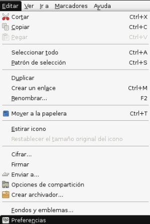
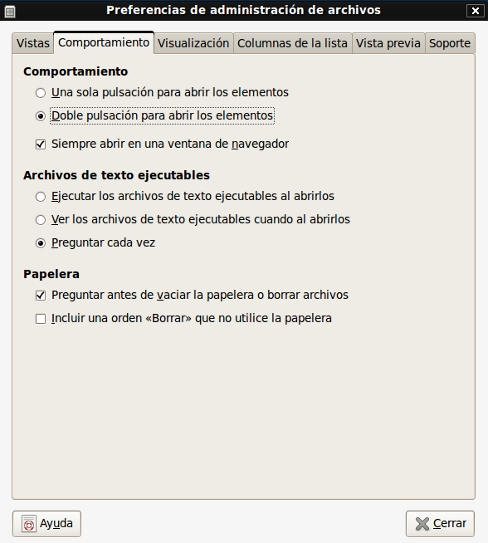
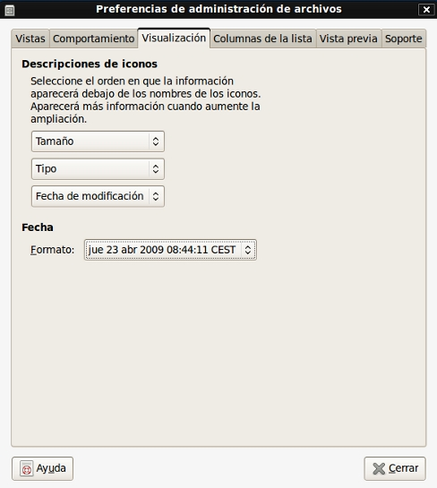
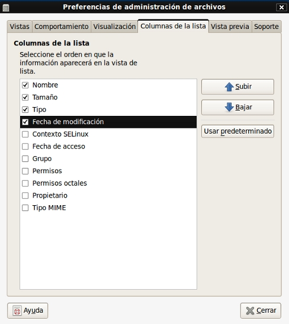
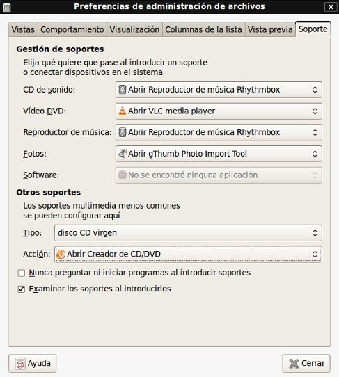

El escritorio en Guadalinex, basado en Gnome, contiene muchos elementos que ya te hemos explicado en nuestro Paseo por el escritorio, pero para manejar dichos elementos y poder realizar tareas con ellos, Guadalinex utiliza Nautilus, que es, para que lo entiendas, como la ventana que permite que puedas manejar tus archivos, carpetas, programas,etc…
Para conocer más de cerca nuestro administrador de archivos Nautilus, abre cualquier icono del escritorio, por ejemplo, la Carpeta personal. Después tienes que hacer clic en la barra de menús en el menú Editar→Preferencias.

Se abrirá una ventana con una serie de pestañas que te permiten cambiar el aspecto de la ventana de Nautilus y modificarlo a tu gusto.
-Vistas:
Vista predeterminada: hace referencia al modo en el que quieres ver las carpetas que tienes guardadas. Se pueden visualizar esas carpetas en modo Iconos, es decir, con ese dibujo con forma de carpeta uno al lado del otro,en modo Lista, como un listado por líneas de todas las carpetas, o en vista Compacta, cuyo aspecto es el mismo que el modo Lista pero sin incluir información sobre el tamaño de la carpeta, tipo, fecha de modificación, etc….. También se pueden ordenar las carpetas por las diferentes categorías a las que hacíamos referencia: nombre, tamaño, tipo, fecha de modificación, y emblemas, pero esta información solo la tendrás disponible y a la vista si has elegido la opción de ver las carpetas en modo Lista. Te permite además colocar las carpetas antes que los archivos, o al revés, así como mostrar los archivos ocultos, esos que el sistema no te presenta por defecto, y para estas dos opciones, sólo tienes que marcar o desmarcar las casillas de verificación.
Valores predeterminados para la vista de iconos: por si quieres aumentar o disminuir el tamaño de tus iconos en tantos por cien. Con la opción Usar distribución compacta, si marcas la casilla de verificación podrás observar que se disminuye la separación lateral entre los iconos y aparecen más juntos. También puedes hacer que el nombre de las carpetas o archivos aparezca debajo del icono o al lado de este.
Valores predeterminados para la vista de árbol: la vista de árbol es ese panel lateral, colocado en la parte izquierda de la ventana, que te ofrece información sobre todos los elementos que se pueden manejar con Nautilus. Puedes marcar o desmarcar la casilla de verificación para que te muestre sólo las carpetas o todos los elementos en general.
-Comportamiento: esta pestaña engloba las formas de comportarse nuestro administrador de archivos a la hora de realizar una acción

Comportamiento: puedes escoger entre que te abra los elementos con una sola pulsación, es decir, con un solo clic del ratón; que los abra con doble clic; y que además te los abra o no en una ventana del navegador.
Archivos de texto ejecutables: para elegir entre ejecutar los archivos de texto nada más abrirlos, ver los archivos cuando los abres, o que el sistema te pregunte siempre antes, opción que te recomendamos ya que según lo que pretendas hacer en cada momento puedes escoger entre abrirlo, visualizarlo o ejecutarlo.
Papelera: permite dos opciones con respecto al modo de proceder en la ventana de la papelera, y te recomendamos que marques la casilla de verificación de la opción Preguntar antes de vaciar la papelera o borrar archivos, pues de esta manera siempre puedes asegurarte de que en la papelera ya no queda nada que te interese antes de vaciarla, o cerciorarte de que realmente quieres borrar una serie de archivos. Pero si marcas la segunda opción Incluir una orden borrar que no utilice la papelera, el sistema procederá a eliminar de forma permanente sin mandar los elementos a la papelera, sin que haya posibilidad de rescatarlos más tarde si te has equivocado.
-Visualización: para modificar el aspecto del modo Iconos.

Descripciones de iconos: te permite añadir al icono, junto al nombre de la carpeta o archivo información relativa al tamaño, tipo fecha de modificación, fecha de acceso, propietario, etc… información que antes habíamos visto que sólo se añade por defecto en el modo Lista, pues bien, aquí puedes organizarlo para que también se pueda ver en el modo Iconos. Puedes seleccionar el orden en el que quieres que te aparezca esa información, cuanto mayor sea el tamaño que le hayas dado al icono, mayor será el número de informaciones que podrás añadir debajo del nombre. Si no te interesa añadir nada selecciona la opción Ninguno. En esta misma pestaña además puedes variar el formato de la fecha.
-Columnas de la lista: para modificar el aspecto del modo Lista. Se utiliza para añadir informaciones (nombre, tamaño, tipo, fecha de modificación, etc…) a la lista de tus carpetas y archivos, y establecer el orden en el que quieres que se presente esa información, para ello, sólo tienes que marcar los campos que te interesan y hacer clic en las flechas de Subir y Bajar, situadas en la parte derecha de la ventana, para modificar el orden como tú prefieras.

-Vista previa: podrás ver qque se refiere a opciones de visualización concretas como mostrar texto en los iconos, mostrar miniaturas, escuchar previamente los archivos de sonido, contar el número de elementos que tienen en su interior las carpetas. Para gestionar todas estas cuestiones puedes elegir entre tres opciones: que el sistema lo haga siempre, nunca, o solo en los archivos locales.
-Soporte: en esta ventana vas a elegir lo que quieres que haga el sistema cuando conectamos algún dispositivo del tipo, reproductor de música, CD de sonido, cámara de fotos, DVD, etc…

CD de sonido, vídeo DVD, reproductor de música, fotos, software: cuando conectes o instales alguno de estos dispositivos a tu ordenador, desde aquí puedes seleccionar si quieres que el ordenador abra directamente el programa que los gestiona, (por ejemplo en el caso de un CD de sonido el reproductor de música Rhythmbox), si abre una carpeta, si no hace nada, o si te pregunta qué quieres hacer. En el caso del software, a estas opciones se añade la posibilidad de Abrir el programa de autoejecución para que ejecute ese software directamente.
Otros soportes: en este apartado puedes decidir que quieres que haga tu sistema cuando conectes algunos dispositivos multimedia menos conocidos, como por ejemplo, el disco DVD virgen, con opciones a elegir como abrir el creador de DVD, o abrir el programa de grabación de DVD, entre otras.
Anterior: Teclado en pantalla onBoard
Siguiente: Entorno de tu administrador de archivos Nautilus
{kind=link}
{kind=link}
{kind=link}
{kind=link}
{kind=link}